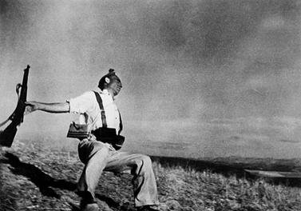

The Falling Soldier
Robert Capa · 1936 · Photograph
In copyright. Look and learn: shown for study, not for download.
Robert Capa was twenty-two and photographing the Spanish Civil War when this was published in the French magazine Vu on 23 September 1936; Life ran it in July 1937. In a 1947 radio interview he said he had held the camera above his head and never saw the frame. Since 1975 it has been questioned: other pictures from the same sequence place it near Espejo, about 50 km from the battle at Cerro Muriano. When boxes of his Spanish negatives reached New York in 2007, this one was not among them.